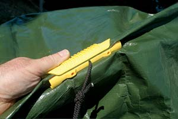

I always feel the most affection for my tarps when they’re neatly folded on a shelf. Actually using them is different. Every tarp I’ve ever used has been hard to tie down in a tidy way. And if there’s even a little slack in them at all, they start flapping and snapping and tearing when the wind blows. All this is why I’m so excited about the Grabbit line of tarp holders (877-981-5262).
Imagine being able to instantly attach a rope or bungee cord anywhere you want on a tarp - sides or middle - with no risk of ripping the fabric. This is what Grabbits do. Each one is a two-piece, plastic device that grips the tarp, providing a rip-proof anchor point for securing it. You roll the inner half (called the “dog bone”) into any section of tarp, then slide the trough-shaped “sleeve” over the top from one end. With the tarp in between these two parts, it’s now locked solidly to the Grabbit, allowing the tarp to be tied down any way you want. But wait, there’s more.
I tried three different lengths of Grabbits: the 3-inch-long Mini, the 6-inch-long model and the 20-inch Premium. They all work perfectly, holding on to standard polyethylene tarps without slipping. The dog bones on the two larger sizes also are drilled to accept screws - anchor them to a building, lay the tarp in place, then slip the sleeve over the top. You’ve got an instant lean-to. Grabbits also can be used to join two or more tarps for large jobs, like covering a roof that’s getting new shingles.
The Grabbit system is fast and easy to use. And for the first time in my life, I feel as good about using my tarps as I do when they’re folded up neatly and put away.
|
 STEVE MAXWELL Grabbits are tarp tiedowns that make it easy to secure all shapes and sizes of tarps in any position. |
|
|